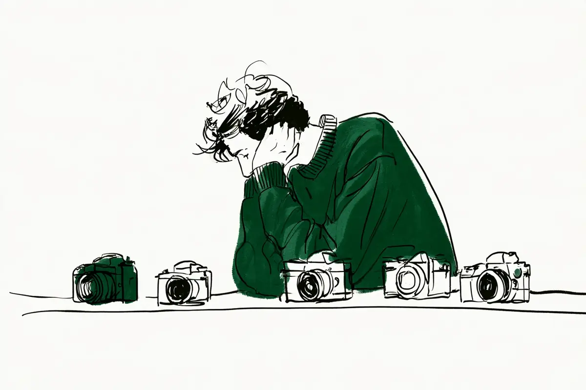

この記事には広告(アフィリエイトリンク)が含まれます。
現在地: 買う前に迷ってる
初心者が最初に買ったカメラ、口コミで多かった機種と後悔の声

最初に買ったカメラを機種名つきで書いた97人の声を機種ごとに並べると、同じ機種でも満足した人と、後悔した人・買い替えた人に割れていました。だから、この機種なら後悔しない、この機種は後悔する、とは言えません。名前が多く出た機種は生産終了のものが多いので、今も売っている機種が話に出た節は表の下にまとめました。出てくるのはみんなが買った機種で、私が選んだ機種ではありません。
私はカメラを持っていないので、noteと知恵袋の声を集めて整理する側で、どの機種を買うかはすすめません。何で決めたかは初めてのカメラ、最初の一台は何で決めた?に、買ったあとの後悔の中身は一眼レフを買ったけど後悔…にあります。
- 機種ごとの人数と内訳を先に見たい → 早見表
- 今売っている機種の声だけ読みたい → 今も売っている機種
- この数字をどこまで信じていいか → 偏りと、楽天リンクの条件
- まだ買うと決めていない → スマホで十分、一眼はいらない?
最初に買ったカメラの口コミ、機種別の早見表
2010年以前と分かる話を除いた97人を、機種名から私がシリーズに分け、メーカー順に並べました。内訳も私の読み方で、後悔は「後悔した・使わなくなった・無駄だった」と本人が書いた人、買い替えは不満の有無を問わず別の機種に移った人です。理由の列は、条件の一覧として見てください。
| 機種(シリーズ) | 人数 | 内訳(満足/両方/買い替え/後悔/買ったばかり) | 満足の声にあった理由 | 不満・短所・買い替えの理由 | 現行/生産終了(2026年10月時点) |
|---|---|---|---|---|---|
| キヤノン EOS Kiss X系 | 13人 | 6/0/5/2/0 | 今も手元に、使いやすい | セットのレンズに不満、使わなくなった | 話に出た機種は全部生産終了 |
| キヤノン EOS Kiss M/M2 | 4人 | 2/1/0/1/0 | 買ってよかった、3年続く | 最初は設定が分からず、望遠不足 | 生産終了 |
| キヤノン EOS R50/R10 | 4人 | 3/0/0/0/1 | 写りと撮れる割合が上がった | セットの望遠の出番なし(後悔・買い替えなし) | 現行 |
| ソニー α6000系 | 11人 | 4/2/4/0/1 | ピント合わせ、花火がきれい | 動画で上位機へ、思ったより重い | α6400・α6700は現行 |
| ニコン D3000/D5000番台 | 7人 | 2/1/3/1/0 | 中古で人物撮影、出かける理由に | ピンボケ連発、持ち出さなくなった | 全部生産終了 |
| ニコン D7000系 | 6人 | 3/2/1/0/0 | シャッター音、価格以上 | 重い、使いこなせず眠らせた | D7500は現行 |
| ニコン Z fc/Z50II | 4人 | 3/1/0/0/0 | 見た目と価格で想像以上 | 別機種の外観に未練(後悔・買い替えなし) | 現行 |
| 富士フイルム Xシリーズ | 6人 | 3/1/0/0/2 | 軽い、入門機でも写りが良い | 富士用の中古レンズが少ない(後悔・買い替えなし) | 未確認 |
| OM SYSTEM/オリンパス PEN | 5人 | 4/1/0/0/0 | 小さくどこへでも持ち出せた | 予備バッテリーを買わず後悔(後悔・買い替えなし) | E-P7は現行、E-PLは未確認 |
| OM SYSTEM/オリンパス OM-D E-M10系 | 4人 | 2/1/1/0/0 | 安くて軽い、気に入った | 階調が乏しい、大きな規格へ | Mark IVは現行 |
| パナソニック LUMIX | 4人 | 2/0/1/0/1 | 色味と形に愛着 | 野鳥には向かず買い替え | 未確認 |
表に入らない29人は、レンズを交換できない小型のカメラ(コンデジ)が6人、ほかは1〜3人ずつの機種です。現行かどうかは、メーカーの製品一覧と生産終了一覧で2026年10月に確かめられた範囲だけ書き、取れなかったものは未確認にしました。
今も売っている機種が話に出た節
- R50/R10: R50・R10
- α6000系: α6400・α6700
- D7000系: D7500
- Z fc/Z50II: Z fc・Z50II
- E-M10系: E-M10 Mark IV
- PEN: E-P7
Kiss X系の現行機Kiss X90は、声に一度も出てきませんでした。
偏りと、楽天リンクの条件
97人の内訳は、noteが90人、知恵袋が6人、個人ブログが1人です。私の読み方で分けると、満足46人・満足と不満の両方14人・買い替え23人・後悔8人・買ったばかり6人。この数字には、はっきりした偏りがあります。
- noteで見つかるのは、今もカメラを続けている人の振り返りです。やめた人は書き残しにくいので、満足と買い替えの側に寄ります
- 知恵袋は、多くは後悔や失敗の言葉で探して拾いました。後悔と読んだ8人のうち4人は知恵袋です。後悔の数は、出典の選び方と私の区分で動きます
- Kiss X系が多いのは、2011年ごろから数年前までの機種の振り返りが多いからです。今カメラを始める人が何を買っているかを表す数ではありません
- 97人のうち17人は、購入リンクか広告の表記があるサイトの書き手です。Z fc/Z50IIは4人中3人、α6000系は11人中3人がそうでした。本文では「(◯◯の紹介もしているサイトです)」と添えています
- 教える側・仕事で撮る側の書き手が5人います(カメラ教室の講師、取材ライター講座の講師、フォトグラファー、建築写真、カメラ関係の開発職)。本人の最初の1台の体験として数え、本文に立場を添えました。フォトグラファーの1人は記事全体が機種の推薦ですが、満足の数に入れています
- 親や祖父母に買ってもらった人、先輩や家族から譲られた人も含めています(7人)
だから、この機種なら後悔しない、この機種は後悔しやすい、とは言えません。同じ機種の両側の声を読む材料として使ってください。
この記事の楽天リンクは、その節で声に出た機種名で楽天市場を検索するもので、私のおすすめ順ではありません。置く条件は1つで、購入リンクのない本人の体験が2人以上あり、かつ後悔・買い替え・不満の側の声があることです。現行か生産終了かは条件にしていません。当てはまったのは7つの節です。
当てはまらなかった節には、理由を書きました。富士フイルムの節は、不満の側の声が購入リンクのある書き手1人だけだったので、条件の外として置いていません。
キヤノン EOS Kiss X系: 今も手元にある人と、無駄な買い物と振り返る人
山の記録を撮るヤマノメさんは、Kiss X7iで一眼レフ(鏡を使ってのぞくタイプのカメラ。言葉の意味)を始めた人です。
エントリーモデルなので評価は分かれそうですが、めちゃくちゃ使いやすくて、お気に入りの1台です。
エントリーモデルは、値段を抑えた入門向けの機種のことです。Kiss X4からX10iまでの13人のうち、何年も手元に置いている人は6人いました。何度も売ろうとしたが手放せないみよしさんもその1人です。
買い替えた5人の理由はばらばらで、3人は理由を書いていません。真賀田真琴さんは2014年、コンデジの次の初めての一眼としてKiss X7iを買い、セットのレンズの描写に満足できませんでした。単焦点(写る範囲が決まったレンズ。言葉の意味)を足し、約1年後にフルサイズ(センサー=光を受け止める板が一番大きい規格。言葉の意味)の6Dへ。ママ向けカメラ教室の講師をしているすえこカメラさんは、最初のKiss X9からミラーレス(センサーが見た映像を画面でのぞくカメラ)に乗り換えました。
ミラーレスを初めて握った時は、軽くて握りやすくて感動しました。
一眼レフの音と撮っている実感は認めつつ、女性の手には厚く重かった、という書き方です。
後悔と読んだのは2人です。ねこすこーぷさんは、カメラのイロハも分からず使う回数が減り、Kiss X6iを2年で後輩に売りました。もう1人は、約5万円のKiss X7をネットで買い、物足りず3年で3台になったユキカさん(カメラの紹介もしているサイトです)。今はフリーカメラマンです。
振り返ると、Ｋｉｓｓは無駄な買い物でしたね。
Kiss X4からX10iまでは、キヤノンの生産終了商品の一覧に全部載っています。声に出た機種の、いまの値段や中古の出回り方を確かめるためのリンクです。下のリンクは『Canon EOS Kiss X7i』の名前で楽天市場を検索します。生産終了の機種は、中古や在庫品になります。
PR(広告)Canon EOS Kiss X7i声に出た機種名で検索(おすすめではありません)楽天市場で値段を見るキヤノン EOS Kiss M/M2: 設定が分からず楽しくなかった人、望遠レンズが足りなかった人
2023年に安めでそこそこ撮れるものとしてKiss M2のセットを買ったtomoya_photoさんは、最初をこう振り返ります。
でも最初は全然楽しくなかった。
設定が分からなかった時期の話で、勉強して撮りたい人を撮れるようになってからは、めちゃくちゃ楽しかった、と続きます。たけさんは設定が分からず全部オートで始め、3年続けています(オートから出る手順はまずPモードからに)。名須川玲一さん(カメラの紹介もしているサイトです)は買ってよかったと書く人で、記事全体がKiss Mの推薦です。
後悔は、知恵袋の質問者です。高校野球を撮るために母に買ってもらったKiss Mに、付けられるレンズがあまりなく、200mmのレンズで足りない、と書いています(その質問)。Kiss MとM2はキヤノンの生産終了商品の一覧に載っています。声に出た機種の、いまの値段や中古の出回り方を確かめるためのリンクです。下のリンクは『Canon EOS Kiss M』の名前で楽天市場を検索します。生産終了の機種は、中古や在庫品になります。
PR(広告)Canon EOS Kiss M声に出た機種名で検索(おすすめではありません)楽天市場で値段を見るキヤノン EOS R50/R10: 4人と少なく、後悔・買い替えの声はなかった
R50とR10は4人と少なく、1人は買ったばかりで、後悔や買い替えの声はありませんでした。コンデジで競馬を撮っていて物足りなくなった白井さんは、R50で写りと、狙いどおりに撮れる割合が明らかに良くなった、と。店員のすすめで中古のR10を買ったばかりのうえだしょうごさんもいます。重さについて書いた人はいませんでした。
不満の側は、Kiss X10とM2を借りて試してからR50のダブルズームキットを買ったタマムシさんの1人です。セットの望遠側のレンズの出番がなかった、と短所に挙げています。R50とR10はキヤノンの製品一覧に載る現行機です。声に出た機種の、いまの値段や中古の出回り方を確かめるためのリンクです。下のリンクは『Canon EOS R50』の名前で楽天市場を検索します。
PR(広告)Canon EOS R50声に出た機種名で検索(おすすめではありません)楽天市場で値段を見るソニー α6000系: 買い替えても不満はなかった人、思ったより重いと書いた人
イソフルランさんは、バイト代をためて中古のα6400を買い、約3年後にライブ撮影に備えてα6700へ移った人です。
文句が有った訳ではない、むしろこれはSONYのAPS-C機の中でも名機であると個人的には思う。
APS-Cは、フルサイズより一回り小さいセンサーの規格です(言葉の意味)。不満はスマホへの転送が不安定なことくらいだったそうです。買い替えた4人の理由は、こうでした。
- 動画も撮りたくなった: nana sugawaraさん(α6100)
- 好きな写真が富士フイルムで撮られていた: のこさん(α6000)
- フルサイズへ移った: 旅たびさん(α6600)
- ライブ撮影に備えた: イソフルランさん
満足側は、花火がきれいに撮れて楽しいと書くだーめんさん(2026年7月に購入)などの4人です。
重さと持ち運びは、3人が書いています。ゆさん(商品の紹介もしているサイトです)は、ピント合わせの速さで選んだα6400が思ったより重く、セットのレンズではボケませんでした。3日後に中古の単焦点を足しています。文野巡さん(商品の紹介もしているサイトです)は、重さと設定の混乱を差し引いても楽しい、と。いのりさんは満足側ですが、仕事が忙しく持ち歩くのは邪魔で出番が減った、と書いています。重さの公式の数字は、α6400がバッテリーとカード込みで約403g(ソニーの仕様ページ)です。
α6400とα6700は現行で、α6000・α6100・α6600はソニーの製品ページで生産完了です。声に出た機種の、いまの値段や中古の出回り方を確かめるためのリンクです。下のリンクは『SONY α6400』の名前で楽天市場を検索します。2026年10月時点で現行の機種です。
PR(広告)SONY α6400声に出た機種名で検索(おすすめではありません)楽天市場で値段を見るニコン D3000/D5000番台: 基礎を学べた人と、持ち出さなくなった人
学生のときにD5300を買ったひとりシラフさんは、基礎を身につけるには良いカメラだった、と書いたうえで、こう続けます。
社会人になりほとんど一眼を持ち出さなくなった。
8年持ってから友人へ譲りました(使わなくなった人の声はカメラ趣味はやめとけ?にも)。満足側は、中古のD5600が人物撮影で活躍したKさんと、D3400がバッグにあるから出かけるようになったSoraさんです。D5600を星空のために選んだ初さんは、本体にピント合わせ用のモーターがなくレンズ探しが大変だった、という後悔も書いています。
買い替えた3人のうち、本体の機能の不満を書いたのはK.Y.さんです。最初のD5500をすごく気に入っていた、と前置きして、こう続けます。
あと、唯一の不満は水準器がなかったんですよね。
水準器は、カメラの傾きを画面に出す機能です。手放した理由は、モニターのつなぎ目の傷みと、星景写真にはフルサイズが向くと知ったこと。渡辺まりこさん(カメラの紹介もしているサイトです)は、10年以上前に夫と同じニコンで一番手頃なD3100を買いました。ピンボケ連発と色味で満足できず、フルサイズのD750へ。取材ライター講座の講師です。先輩から譲り受けた中古のD5000で始めた人も1人います。
6機種とも、ニコンの製品ページで旧製品(ニコンの表記)の扱いです。声に出た機種の、いまの値段や中古の出回り方を確かめるためのリンクです。下のリンクは『Nikon D5600』の名前で楽天市場を検索します。生産終了の機種は、中古や在庫品になります。
PR(広告)Nikon D5600声に出た機種名で検索(おすすめではありません)楽天市場で値段を見るニコン D7000系: シャッター音で選んだ人、使いこなせず眠らせた人
2026年に中古のD7000を実質4万円で買ったきーたらさん(商品の紹介もしているサイトです)は、価格以上の性能だと書く人です。同時に、重さ・ピント合わせ・ノイズ・データ転送を短所に挙げています。購入直後の報告です。店頭でシャッター音を聞いてD7000を選んだレンズと鍵盤と少しの魔法さんは、その後に富士フイルムやライカも使った人です。
最初のD7000には、最初の一台としてのしっくりくる音がありました。
満足側は、D7500を今も最高だと書く人を含めて3人です。両方を書いた2人は、重さと、使いこなせなかったことです。ツバメさんは、D7200で一眼デビューしたときはこんなに重いものは使えないと思い、今は重い機材も好む側に変わった人です。ヒトメさんは2012年、店員に入門機をすすめられたのに欲しくてD7000を買いました。使いこなせず、しばらく箪笥の肥やしにしたものの、写真を教えてくれたカメラだと振り返り、今は父が使っています。買い替えた1人は知恵袋の回答者です。
使ってすぐにワクワク感が感じられず、一年後にD800を購入した。
D7000とD7200はニコンの製品ページで旧製品です。D7500は一眼レフの製品一覧に載る現行機で、バッテリーとカード込みで約720g(仕様ページ)。声に出た機種の、いまの値段や中古の出回り方を確かめるためのリンクです。下のリンクは『Nikon D7000』の名前で楽天市場を検索します。生産終了の機種は、中古や在庫品になります。
PR(広告)Nikon D7000声に出た機種名で検索(おすすめではありません)楽天市場で値段を見るニコン Z fc/Z50II: 想像以上だった人と、別の機種の見た目に未練がある人
見た目と手頃な価格でZ fcを選んだaaaai_kataさんは、撮ってみたら想像以上だった、と書いています。4人のうち購入リンクのない書き手は、この1人だけです。ひゅるりさん(カメラの紹介もしているサイトです)はZ fcに満足しています。アセアンさん(カメラの紹介もしているサイトです)はZ50IIのコンパクトさを利点に挙げ、のちにフルサイズを買い足しました。
両方を書いたのは、迷いに迷ってZ50IIを買った日埜戸そらさん(カメラの紹介もしているサイトです)です。
ただ、Zｆｃのプレミアムエクステリアは今でも若干後悔してます(+_+)
5か月でAPS-Cに満足できなくなり、フルサイズを足して並行して使っています。どちらもニコンのミラーレス製品一覧に載る現行機です。この節に楽天リンクは置いていません。購入リンクのない本人の体験が1人だけだからです。
富士フイルム Xシリーズ: 軽さを優先した人と、中古レンズの少なさを書いた人
首と肩の痛みから軽さを優先し、借りて試してからX-T30 IIIを買ったcitro_cameraさんの4か月後がこれです。
一日中歩く旅でも使い続けられたので、購入時に軽さを優先した判断は正解だったと思う。
X-T200・X-T30 III・X-T50・X-S20・X-M5の6人に、後悔や買い替えの声はありませんでした。約5年前にX-T200で始めたTADACAN photoさんは、入門機なのに写真が良かったと書き、4年後にX-M5へ。買ったばかりの2人は、選択が合っているか不安なぐちおさんと、コンデジから移った_96shimaさんです。
不満の側は、コンデジからX-T50に移ったけやまるさん(商品の紹介もしているサイトです)の1人でした。レンズの規格(マウント)で選べるレンズが決まることを買ってから知り、富士フイルム用の中古レンズが少なかった、と。現行かどうかは、公式の製品一覧を取得できず未確認です。この節に楽天リンクは置いていません。不満の側の声が、購入リンクのある書き手1人だけだからです。
OM SYSTEM/オリンパス PEN: 小さくてどこへでも持ち出せた人
大学生のころにE-PL7を買った708さんは、非常に気に入っていた、と書いています。オリンパスのカメラは、現在はOM SYSTEMが発売しています。
沼に落ちることなく（笑）、キットレンズだけでも十分に満足できていたということだと思います。
キットレンズは、本体とセットで売られるレンズです。PENはマイクロフォーサーズという、APS-Cよりさらに小さいセンサーの規格です。5人の満足の理由は小ささと軽さで、てててさんも同じ向きでした。両方を書いたのは、娘に自分と同じE-P7を買い与えたフルリモートIT系パパさんです(カメラの紹介もしているサイトです)。予備バッテリーを買わなかったことを早々に後悔したそうです(予備バッテリーの声はアクセサリーの記事に)。
公式の製品ページに載っているのはE-P7で、E-PLは載っておらず、生産終了の一覧は確かめられていません。この節に楽天リンクは置いていません。カメラ本体への後悔・買い替え・不満の声がなかったからです。
OM SYSTEM/オリンパス OM-D E-M10系: 気に入っていた人と、階調が気になった人
KTAさんは、昆虫写真家にオリンパスが多いことなどからE-M10 Mark IIIを選びました。
この時点で階調の乏しさは気になっては居たがE-M10mk3と云うカメラをとても気に入ってしまっていた
階調は、明るいところから暗いところまでのなめらかさのことです。背面モニターの故障をきっかけに上位機のE-M1 IIを足し、そのE-M1 IIを3か月で手放しました。満足側は2人です。中古のMark IIIを5万円で買ったもみじ卍ゅうさん(カメラの紹介もしているサイトです)は、軽くて持ち出しやすいと書き、今も同じ規格を使っています。もう1人は、デザインでMark IVを選んだ知恵袋の回答者です。買い替えたけんいちさんは約10年前にMark IIを買い、APS-C、フルサイズと規格を上げてから、10年後にマイクロフォーサーズに戻った人です。
公式の製品ページに載っているのはE-M10 Mark IVで、Mark II・IIIは載っておらず、生産終了の一覧は確かめられていません。声に出た機種の、いまの値段や中古の出回り方を確かめるためのリンクです。下のリンクは『OLYMPUS OM-D E-M10 Mark III』の名前で楽天市場を検索します。生産終了の機種は、中古や在庫品になります。
PR(広告)OLYMPUS OM-D E-M10 Mark III声に出た機種名で検索(おすすめではありません)楽天市場で値段を見るパナソニック LUMIX: 愛着で手放せない人、野鳥のために買い替えた人
かわいい見た目でS9を選んだけんけんさんは、野鳥に目覚めて買い替えを決めた人です。
LUMIX S9は僕に写真の楽しさを教えてくれた大好きなカメラになりました。
野鳥撮影には向かない、というのが買い替えの理由です。S5IIX・S9・G99II・GF7の4人は機種がばらばらです。kurumiさんは色味と形が好きでS5IIXを手放せず、ビビさんは店で手に取ったGF7をどこにでも持ち歩きました。現行かどうかは未確認です。この節に楽天リンクは置いていません。1機種あたり1人で、検索する機種名を1つに絞れないからです。
同じ機種名で、満足と後悔の両方があった
α6400は満足3人・買い替え1人・両方2人。Kiss X7とX7iには、今も手元に置く人と、1年で上位機へ移った人と、無駄な買い物だったと振り返る人がいます。D7000は、音で選んで満足した人と、使いこなせず眠らせた人。同じ機種でこれだけ割れているので、機種ごとの比較はできません。
後悔と読んだ8人の理由も、ばらばらでした。
- 使い方が分からなかった: EOS 7Dの知恵袋の質問者、Kiss X6iのねこすこーぷさん
- 重くて持ち歩かない: EOS 6Dのふぃるさん、ペンタックスKPの質問者
- 社会人で持ち出さなくなった: D5300のひとりシラフさん
- 入門機で物足りなかった: Kiss X7のユキカさん
- 撮りたいものに付けられるレンズが足りない: Kiss Mの質問者
- 調べずに憧れで買い、設定が分からない: コンデジの質問者
97人には数えていない、2009年発売のD3000で始めた琉雨さんは、奮発した上位機も使いこなせず1年で手放し、今はこう振り返っています。
今思えば、カメラのせいだけではなかったと思います。
買う前の人が、機種名より先に確かめられること
機種名で探しに来た人向けに、97人の声の中で分かれ目になっていたことを4つ、確かめる順に並べました。私の整理で、決め方そのものは初めてのカメラ、最初の一台は何で決めた?の問いにあります。
- その重さを、毎日持てそうか。 思ったより重い(ゆさん)、女性の手には厚い(すえこカメラさん)、持ち歩くのは邪魔(いのりさん)、重すぎた(ふぃるさん)。公式の重さは「バッテリー・カード込み」の数字で見て、店頭で持ってみる。重さのその後は一眼レフが重くて使わなくなった…に
- セットのレンズで、撮りたいものに届くか。 描写に満足できなかった(真賀田真琴さん)、ボケなかった(ゆさん)、野球に望遠が足りない(Kiss Mの質問者)。逆に、セットの望遠は出番がなかった(タマムシさん)。撮りたいものを先に決めてから、セットの中身を見る
- あとから足すレンズが、中古で見つかるか。 富士フイルム用の中古レンズが少なかった(けやまるさん)、本体にピント合わせ用のモーターがなくレンズ探しが大変(初さん)。買う前に、その規格(マウント)の中古レンズを中古店のサイトで検索してみる
- 借りて試した人は、2人だけ。 X-T30 IIIを借りてから買ったcitro_cameraさんと、Kiss X10とM2を借りてからR50を買ったタマムシさんです。借りて分かること・分からないことは試したい人は、借りるに
4つとも、買ったあとに分かった人の声から逆算したものなんですよね。機種名から入っても、この4つを先に確かめると、同じ機種の両側の声のどちらに近いかが見えやすくなると思います。
次に読むなら
この記事で読んだ121件
新しく読んだ体験談62件(97人のうち57人の出典、年代が古くて数えなかった4人、採用基準に合わず数えなかった1人)、初めてのカメラ、最初の一台は何で決めた?でも読んだ41件(40人の出典)、メーカー公式18件に分けています。本文で使わなかったものには注記しました。
新しく読んだ体験談62件
- note(きーたら)「はじめてのカメラ！ニコンD7000を使ってみた感想」(中古のD7000に満足、購入直後、2026年。商品の購入リンクあり)
- note(旅たび)「【SONYα7Vが良い！って話（作例あり）】カメラ好き旅行会社社員が気に入っているカメラ」(α6600を2年使いフルサイズへ、2026年)
- note(けんいち)「ペンFを買うのを避けていた理由」(E-M10 Mark IIから規格を上げ、10年後に戻った、2026年)
- note(708)「はじめて買ったカメラの話——PEN E-PL7との出会い」(E-PL7に満足、2026年)
- note(AkAzAwA)「一問一答 -𝟓𝟎 𝐪𝐮𝐞𝐬𝐭𝐢𝐨𝐧𝐬-」(Kiss X8iを2か月でα7 IIIへ、理由の記述なし、2026年。本文では人数に入れただけです)
- note(Sora)「カメラを始めた理由。07｜出かける理由が”ひとつ”増えた。」(D3400に満足、2026年)
- note(K.Y.)「友人のカメラ選びにかこつけて、過去のカメラ(D5500)の話など」(D5500を気に入っていたが手放した、2026年)
- note(ててて)「カメラのメーカーを一つにそろえたい。でも決められない」(E-PL10に満足、2026年)
- note(春、花、日向)「ニャンコの写真練習⓪｜下手な上にムっとされる」(ZV-E10 IIを買ったばかりで難しい、2026年。本文では人数に入れただけです)
- note(Reiji Shioya)「36歳、新しい仕事を始めるとき、年齢は壁になるのか」(コンデジのZV-1に満足、2026年。本文では人数に入れただけです)
- note(日埜戸そら)「愛機のはなし」(Z50IIに満足と後悔の両方、2026年。カメラの購入リンクあり)
- note(katy.shot)「傷だらけのNEX-5が、私にカメラのセンサー清掃を教えてくれた話」(中古のNEX-5から買い替え、2026年。商品の購入リンクあり。本文では人数に入れただけです)
- note(おーん)「恐らく最高のカメラを買いました（X-T30 ⅲ）日記」(ZV-E10から買い替え、2026年。本文では人数に入れただけです)
- note(すえこカメラ)「初めてのママカメラ 選び方 一眼レフとミラーレス」(Kiss X9からミラーレスへ、ママ向けカメラ教室の講師、2026年)
- note(もみじ卍ゅう)「物価高騰の今だからこそマイクロフォーサーズのカメラを手にしてみよう」(中古のE-M10 Mark IIIに満足、2026年。カメラの購入リンクあり)
- note(なべちゃん)「写真にハマった時の話」(レンズ一体型のX100Fを3か月で手放した、2026年。本文では人数に入れただけです)
- note(kurumi)「プロセスを信じる」(S5IIXに愛着、2026年)
- note(レンズと鍵盤と少しの魔法)「ニコン、富士、ライカ。使ってきて思う、それぞれの心地よさ」(D7000をシャッター音で選んで満足、2026年)
- note(真賀田 真琴)「私のカメラ遍歴」(Kiss X7iから約1年で6Dへ、2026年)
- note(フォンダンスタジオ)「＃６ 建築写真を撮り始めるまでのカメラ遍歴」(D750から動画のためα7 IIIへ、現在は建築写真の事業者、2026年。本文では人数に入れただけです)
- note(tomoya_photo)「#1 自己紹介。」(Kiss M2で最初は楽しくなかった、2026年)
- note(けんけん)「何を撮りたいかを決めれば写真はハマる」(S9から野鳥向けへ買い替え、2026年)
- note(こうず)「これからカメラを始める人が最初にやるべきことと、最短でスキルを伸ばす方法――指原莉乃にも引用された私の実体験ベースで徹底解説」(中古のD70から買い替え、2026年。本文では人数に入れただけです)
- note(渡辺まりこ)「駆け出し取材ライターのカメラの選び方！何を選ぶのが正解？」(D3100からD750へ、取材ライター講座の講師、2025年。カメラの購入リンクあり)
- note(だーめん)「長岡花火がとてつもなく美しかったので、忘れないうちに書き残しておこうと思う」(α6400を買ったばかりで満足、2026年)
- note(アセアン)「【ブログ】『Z7II』と『Z50II』」(Z50IIに満足しフルサイズを追加、2026年。カメラの購入リンクあり)
- note(aaaai_kata)「カメラを使い始めて1年経過した今」(Z fcに満足、2026年)
- note(Nozomi)「写真を撮った人がどんな人なのか気になる」(祖父に買ってもらったEOS M3に満足、2026年。本文では人数に入れただけです)
- note(露草色)「趣味語り」(親に買ってもらったKiss X10iを今も使う、2026年。本文では人数に入れただけです)
- note(名須川玲一)「【一眼カメラデビュー】僕が愛用した「初めての1台」が、今こそ初心者に推せる理由。」(Kiss Mを推薦、フォトグラファー、2026年。カメラの購入リンクあり)
- note(イソフルラン)「α6400からα6700に乗り換えた話とその理由」(α6400に不満はなく買い替え、2026年)
- note(ふぃる)「「FUJIFILM X-E5」20代最後の僕が選んだカメラ」(6Dが重すぎて手放した、2026年)
- note(白井)「何を何で撮りたいのか（1/2）」(コンデジからR50へ、満足、2026年)
- note(ツバメ)「D2Xを買った」(D7200を最初は重いと感じた、2025年)
- note(午前)「カメラを買った、noteを書く。」(G99IIを買って約1か月、2026年。本文では人数に入れただけです)
- note(yue)「君たちに望むもの」(約15年前のE-PL1に満足、2026年。本文では人数に入れただけです)
- note(sawady)「中古α6100がおすすめな人・おすすめできない人｜2026年に買うなら価格差に注意」(α6100に満足、2026年。カメラの購入リンクあり。本文では人数に入れただけです)
- note(nana sugawara)「ばいたま」(α6100を1年でα6700へ、2026年)
- note(citro_camera)「X-T30 IIIを4か月使ってわかったこと――軽いカメラが、旅と街の見方を変えた」(借りて試してから買い、軽さで満足、2026年)
- note(Ayako)「【FUJIFILM・OLYMPUS・PENTAX】これまでのカメラ遍歴 その①」(ペンタックスK-50を4年メイン機に、2026年。本文では人数に入れただけです)
- note(ヒトメ)「使いこなせなかったカメラが、僕に写真を教えてくれた。」(D7000を使いこなせず眠らせ、のちに写真を教えてくれたと振り返る、2026年)
- note(冬穂)「雑記-15- 日常の撮影」(Kiss X9が馴染む、2026年。本文では人数に入れただけです)
- note(飛行機に魅せられて。)「自己紹介｜初めてのnote｜「なんだかんだ言って、ずっと飛行機の側にいました。」」(型落ちのKiss X4を買ってもらい、いい思い出、2026年。本文では人数に入れただけです)
- note(みよし)「写真を始めたカメラ」(Kiss X10を手放せない、2026年)
- note(はたの独り言)「【LUMIX S9】 カメラと、父と。」(Kiss X80を父へ譲った、2026年。本文では人数に入れただけです)
- note(ヤマノメ)「美しい山の記録、なにで撮る？」(Kiss X7iを今も手元に、2026年)
- note(サイクリンガーBB)「続・写真について気づいたこと」(K-50のセットの写りに最初は満足できず、2026年。本文では人数に入れただけです)
- note(プラム)「はじめてのnote+自己紹介【初心者が綴る日記1】」(Kiss X9iから同じキヤノンの上位機へ、カメラ関係の開発職、2026年。本文では人数に入れただけです)
- note(いのり)「新しいカメラが欲しいと思う今日この頃」(α6400を手放さないが出番は減った、2026年)
- note(alcinist)「富士山の詰め合わせ｜EOS kiss X7i｜」(中級機をすすめられたがKissで満足、2026年。本文では人数に入れただけです)
- note(K)「お師匠さんからもらったオールドレンズ【D5600】」(中古のD5600に満足、2026年)
- note(ユウカ)「Nikon D7500」(D7500に満足、2025年。本文では名前を出さず1人として触れました)
- note(KTA)「カメラライフ」(E-M10 Mark IIIの階調が気になった、2026年)
- note(TADACAN photo)「エントリー機と侮ることなかれ、X-M5の導入の理由と隠れた実力」(X-T200から4年後にX-M5へ、2025年)
- Yahoo!知恵袋「一眼レフでこれを買って失敗した!とかこっち買えばよかった!等のエピソードがあれば教えてください。」(質問者がKiss X7とみられる機種を買って上位機にすればよかったと書く、2017年。最初の1台かどうかと機種名が原文で確かめられないため、97人には数えていません)
- Yahoo!知恵袋「初めて趣味としてカメラを買ったのは2011年のちょうど今頃でした。」(質問者kytebksがEOS 7Dを使わなくなりNEX-5Nへ)
- Yahoo!知恵袋「一眼レフカメラを売るか迷ってます。アドバイスお願いします。」(質問者dir****のペンタックスKPが重くて持ち歩かない、2025年)
- Yahoo!知恵袋「野球の撮影についての質問です。」(質問者が母に買ってもらったKiss Mで望遠レンズが足りない、2023年)
- note(磯松哲大)「レンズ沼からキーボード沼へ――クラファンが変えた製品開発の話」(2009年ごろのペンタックスK-x、年代が古いので97人には数えていません。キーボードの購入リンクあり。本文では使っていません)
- note(だいたい検証中)「なぜ私の最初の一眼レフはNikon D40だったのか」(2009年のD40、年代が古いので97人には数えていません。本文では使っていません)
- note(琉雨)「3-1｜写真を始めたばかりの頃に知りたかったこと」(2009年発売のD3000、年代が古いので97人には数えず、本文で年を添えて引用しました)
- note(るとる)「復活のNikon D60 〜紅葉の昭和記念公園にて」(2008年ごろのD60、年代が古いので97人には数えていません。商品の購入リンクあり。本文では使っていません)
最初の一台の記事でも読んだ41件(40人の出典)
決め手の記事で数えた64人のうち、機種名を書いていて2010年以前と分からない40人です。本文で名前を出していない人は、人数に入れただけです。
- note(ぐちお)「初めてのカメラ(X-M5)を購入」(X-M5、買ったばかりで不安、2026年)
- note(ばんりば)「初めてのカメラが届いた📷」(中古のX-A3、2026年。本文では人数に入れただけです)
- note(のた)「カメラ購入1年、超薄い感想」(コンデジのdp1 Quattro、2026年。本文では人数に入れただけです)
- note(Chii)「いちばん最初のカメラ」(コンデジのCOOLPIX P950、2026年。本文では人数に入れただけです)
- note(nico)「カメラデビューしました」(ZV-E10 II、2026年。本文では人数に入れただけです)
- note(龍野銀次郎)「カメラデビューしました」(α6700、買ったばかり、2026年。本文では人数に入れただけです)
- note(_96shima)「X-T30Ⅲ」(X-T30 III、買ったばかり、2026年)
- note(コルリ)「45万円のカメラを借りたら、写真がうまくなると思ってた.....」(コンデジのFZ85D、2026年。本文では人数に入れただけです)
- note(Junvue Camera)「なぜ私は息子の最初のカメラに13年前の機種を選んだのか」(親が子に中古のE-PL6、2026年。本文では人数に入れただけです)
- note(初)「カメラたのしい!」(D5600、良い選択とレンズ探しの後悔、2026年)
- note(ひゅるり)「子供が生まれて初めて買ったカメラ『Nikon Z fc』」(Z fcに満足、2026年。PR表記、カメラの購入リンクあり)
- note(たけ)「カメラを始めた頃の写真と、今の写真」(Kiss M2、3年継続、2026年)
- note(Keiya)「カメラ初心者だった僕が、今でもSonyを使い続ける理由」(α7C、2026年。本文では人数に入れただけです)
- note(なぎ)「私のカメラデビュー戦」(α7 II、2026年。本文では人数に入れただけです)
- note(うにきらい!)「FUJIFILM Xシリーズ最安の機種で始める、カメラ生活【X-A1】」(中古のX-A1、2026年。本文では人数に入れただけです)
- note(文野巡)「ついに一眼デビュー。世界が"ボケた"瞬間」(α6400、重いが楽しい、2026年。商品の購入リンクあり)
- note(フルリモートIT系パパ)「長女の初めてのミラーレス一眼デビュー、半年使ってわかった、OLYMPUS PEN E-P7の得意と不得意」(親が娘にE-P7、2026年。Amazonアフィリエイト明記、カメラの購入リンクあり)
- note(ひとりシラフ)「8年所持したNikon D5300を手放す。」(D5300を持ち出さなくなり8年後に譲った、2026年)
- note(AKG)「なぜOM-5を選んだのか」(OM-5、2026年。本文では人数に入れただけです)
- note(のこ)「写真を撮るようになって、好きなことが増えた」(α6000から富士フイルムへ、2026年)
- note(ゆ)「スマホ写真卒業🌸カメラ初心者によるSONY α6400購入レビュー」(α6400が思ったより重い、2026年。楽天ROOMのリンクあり)
- note(Tokyo Street PIX)「私のカメラ遍歴」(α330、2026年。Amazonのリンクあり。本文では人数に入れただけです)
- note(ビビ)「「あ、これだ」を信じて。Nikon Z50IIと始めるカメラ生活」(GF7をどこにでも持ち歩いた、2026年)
- note(701)「最初に買ったカメラと、今使っているカメラ」(コンデジのTZ99、2026年。本文では人数に入れただけです)
- note(けやまる)「カメラ初心者がFUJIFILM X-T50を買って、写真を撮る楽しみを知った話」(X-T50、マウントは盲点、2026年。Amazonの購入リンクあり)
- note(ねこすこーぷ)「「フルサイズ vs APS-C」で悩み抜いた私が、α7IIIを買って辿り着いた本当の答え」(Kiss X6iを持ち出さなくなり2年で売った、2026年)
- note(タマムシ)「推しを綺麗に撮りたくて、一眼レフカメラを3ヶ月レンタルしてみた」(R50を買う前に借りた、2024年。本文では同じ人の2026年の記事にリンク)
- note(タマムシ)「推しを綺麗に撮りたい私(初心者)のカメラ&レンズ選び」(同じ人、R50に満足、セットの望遠は出番なし、2026年)
- note(ひび)「カメラを買ったよ」(R50、2026年。本文では人数に入れただけです)
- note(平田翼)「【実体験】カメラ初心者が何を考えてα7CⅡを買い、1年後どうなったか」(α7C II、2026年。Amazonアソシエイト明記、購入リンクあり。本文では人数に入れただけです)
- note(ゆはる)「FUJIFILM X-S20とX-T30III どっちにするかめちゃくちゃ悩んだ話」(中古のX-S20に満足、2026年。本文では人数に入れただけです)
- note(PON)「これから産まれる我が子に贈る、わたしのファーストカメラ!」(α6400に満足、2025年。本文では人数に入れただけです)
- note(うえだしょうご)「人生初めての一眼カメラを買った話」(中古のR10を買ったばかり、2025年)
- note(オレソト)「日常も大切にしたい人のフルサイズ LUMIX S9を1000円レンタルしてみた」(家にあったEOS M3、2024年。Amazonアソシエイト明記。本文では人数に入れただけです)
- note(jyosui48)「はじめまして」(先輩から譲り受けたD5000、2025年。本文では名前を出さず1人として触れました)
- note(cockatl)「初めてのミラーレスでGFX100 IIを1年半使った感想」(GFX100 II、2026年。本文では人数に入れただけです)
- note(とっと)「最初の1台、どう選ぶ?初心者のためのカメラ選びガイド」(EOS 9000D、2025年。本文では人数に入れただけです)
- カメラのいろは(ユキカ)「初心者一眼レフを選んで失敗した話｜カメラ選びのエピソード」(Kiss X7を無駄な買い物と振り返る、2020年。広告・カメラの購入リンクあり)
- Yahoo!知恵袋「初めて買った一眼レフカメラで後悔した経験はありますか?」(D7000を1年でD800へ、の回答者、2023年。質問が後悔を聞いているため後悔側に寄ります)
- Yahoo!知恵袋「趣味でカメラを始めたいです。でも全くの初心者で、何も分からないので何から…」(デザインでE-M10 Mark IVを選んだ回答者、2025年。本文では名前を出さず1人として触れました)
- Yahoo!知恵袋「まったくのカメラ初心者です。数年前に特に調べたりせず、なんとなくカメラに対す…」(コンデジのFZ85を調べずに買って設定に悩む質問者、2026年)
メーカー公式18件(現行かどうかと重さの確認、2026年10月4日取得)
- キヤノン 生産を終了した商品(EOS)
- キヤノン レンズ交換式カメラ 製品一覧
- キヤノン EOS R50 仕様(本文では使っていません)
- ソニー α6400 製品ページ
- ソニー α6400 仕様
- ソニー α6700 製品ページ
- ソニー α6000 製品ページ(生産完了の表示)
- ソニー α6100 製品ページ(生産完了の表示)
- ソニー α6600 製品ページ(生産完了の表示)
- ニコン D5600 製品ページ(旧製品)
- ニコン D5600 仕様(本文では使っていません)
- ニコン D7000 製品ページ(旧製品)
- ニコン D7200 製品ページ(旧製品)
- ニコン 一眼レフカメラ 製品一覧
- ニコン D7500 仕様
- ニコン ミラーレスカメラ 製品一覧
- OM SYSTEM PEN 製品ページ
- OM SYSTEM OM-D 製品ページ
引用は2026-10-04時点で各ページを閲覧して確認しました。